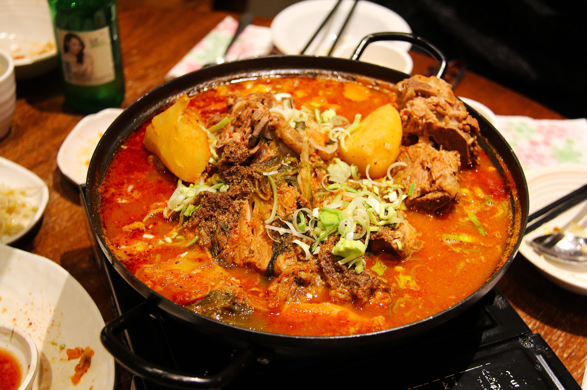

One area that is growing more rapidly than any other is 21st century K-pop, or Korean pop music,
which spans dance-pop,
pop ballads, techno, rock, hip-hop, R&B, and so on. K-pop is a generic term for popular music
from South Korea, which was originally called gayo, meaning pop music. Recently, the term “pop,”
which originally referred to British and American pop music, has been used to refer to popular
music in other countries by adding it to the first letter of the country’s name, like “K-pop” of
Korea. For example, popular music in Thailand, Japan, and China is called T-pop, J-pop,
and C-pop, respectively.
In the same context, Korean pop music is called K-pop. The worldwide success of “Gangnam Style” was followed by a surge of K-pop boy group, BTS. BTS topped the Billboard 200
chart in 2019 and won the Top Social Artist award for the third consecutive year at the Billboard Music Awards. This
attracted attention from the world, resulting in the global recognition of K-pop as a genre.
After landing atop the
Billboard 200 chart in February 2020, “Map of the Soul: 7” maintained high rankings for 23 consecutive weeks. BTS has
achieved various Guinness World Records titles, including a title for most viewers for a music concert livestream. In
August 2020, BTS made history by becoming the first South Korean act to top the Billboard Hot 100 with its first
English-language song “Dynamite.”

Korean cuisine is a traditional style of cooking from the Korean peninsula. It is known for its use of bold flavors,
such as garlic, ginger, and fermented vegetables, as well as for its emphasis on vegetables and high-quality meats. Some
common dishes in Korean cuisine include kimchi (fermented vegetables), bibimbap (a mixed rice dish), and bulgogi
(grilled marinated meat).
Korean food has gained popularity around the world in recent years and is known for being
healthy and delicious.
Certainly. Korean cuisine has a long history that is closely tied to the country's culture and geography. Korean food is
known for its use of a wide variety of ingredients and the balancing of flavors, such as sweet, sour, spicy, and salty.
It is also characterized by the use of fermented foods, such as kimchi, which are believed to have health benefits.
Korean meals often consist of a bowl of rice, a soup or stew, and a variety of side dishes, called banchan, which are
served in small portions. Korean barbecue, where meat is cooked at the table on a grill, is also a popular dining
option.

The cinema of South Korea has become a large market in the world, with the increasing global
success and globalization
of the Korean film industry.
According to the Motion Picture Association of America (MPAA), the value of the cinema of South
Korea in 2018 was USD
1.6 billion out of the global film market of USD 41.1 billion, placing the value of South Korean
cinema at the fifth largest in the world following North America, China, Japan, and the United
Kingdom.
South Korea ranks first for attendance frequency per capita in the world, and Korean films take
51% of the local box offices. Films such as Old Boy, Oasis, Burning, and On the Beach at Night
Alone won leading awards in major categories.
Famous Korean film directors such as Bong Joon-ho, Im Kwon-taek, Lee Chang-dong, Park Chan-wook,
Hong Sang-soo, and Kim Jee-woon are attracting attention in the global film industry. As
Parasite took home the most awards at the Oscars 2020, winning four Academy Awards including
Best Picture, Directing, International Feature Film, and Writing, world media began earnestly
reporting about Korean films. For example, the British newspaper, Guardian, recommended the film
The Handmaiden, and Rotten Tomatoes, an American review-aggregation website for film and
television, spotlighted Poetry.